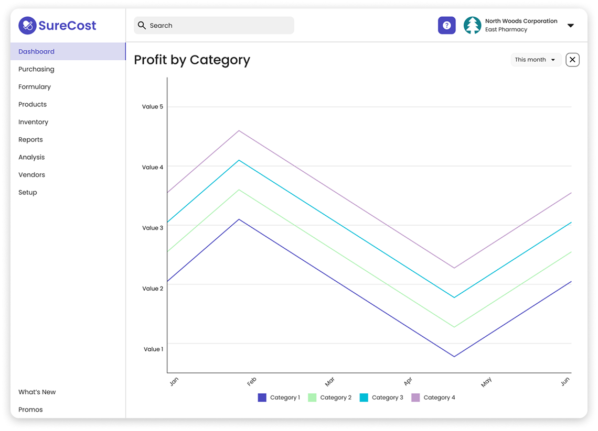
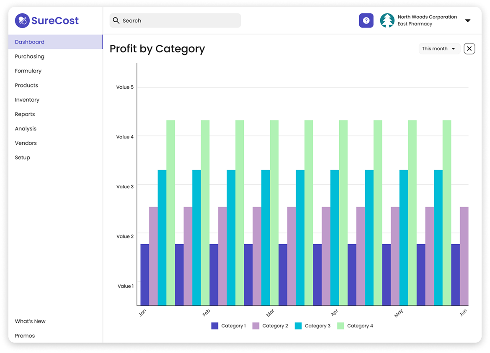

Year
2022
Disciplines
Feature design
Accessibility design
Product strategy
Design pitch
At SureCost, I designed and presented a new dashboard interface and design system
to key stakeholders, showcasing how my designs aligned to company goals. I spearheaded design at SureCost,
facilitated cross-functional collaboration, and worked closely with engineers and product managers.
I was in charge of encouraging design thinking, growing the company’s design culture, uplifting best practices, and advocating for the user.
Background
SureCost is a powerful software that enables small to medium-size pharmices to save money on their
inventory through price watching, inventory management, and in-app coupons.
However, the company hasn't updated their web app's visuals since the early 2010s, causing the app to
face an issue of being incredibly dated in an evolving market.
My Role
I led the design overhaul of SureCost, successfully conceptualizing and presenting a pitch deck to the
CEO, my product manager, and head of engineering with my ideas and visual overhaul of the platform.
Additionally, I delivered designs for features on the current product to meet FDA compliance and provide
new affordances for users.
The version being showcased here was from February 2023.